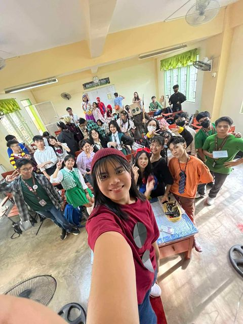
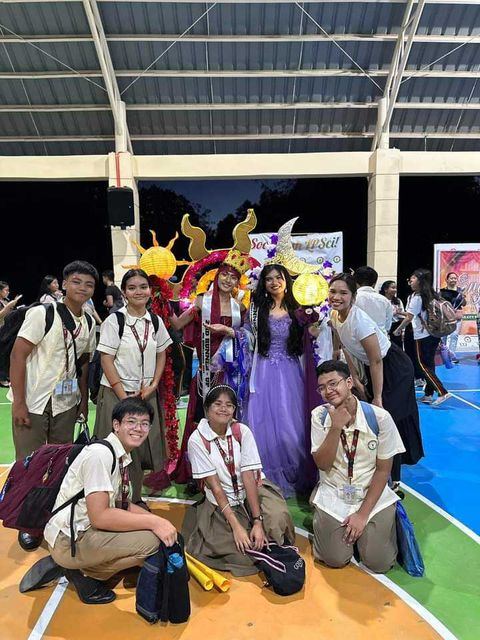
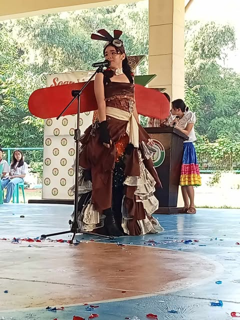
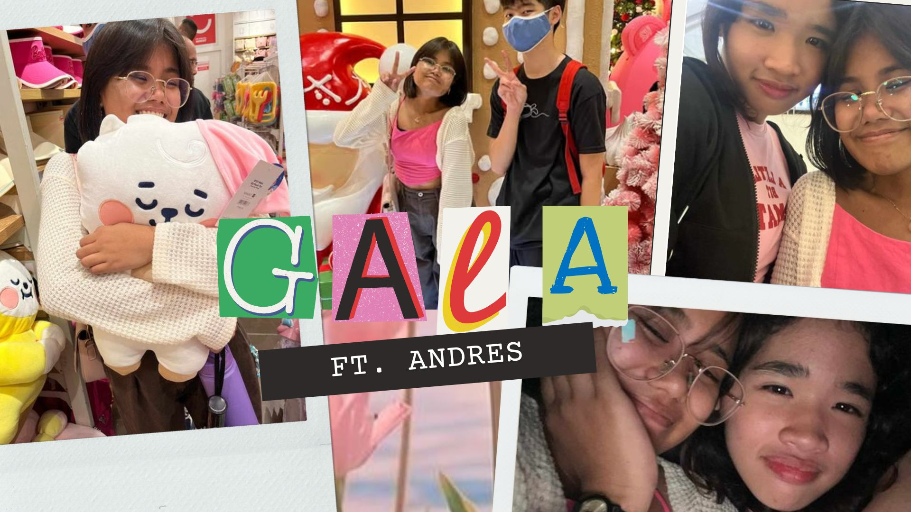
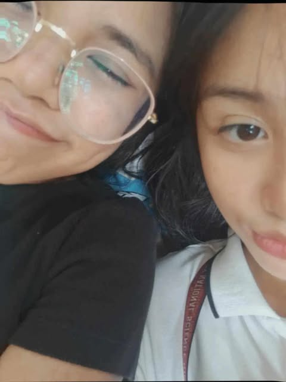
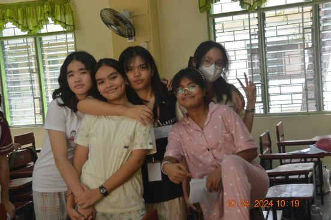

When the English Month started, we were required to dress up as our favorite book character for our performance task
in English. It was really a fun Monday because after our flag ceremony, we did a little parade to showcase our costumes. Angel, Kiera, and I dressed
up as the Chippettes from Alvin and the Chipmunks. It was truly a fun and exciting day.

Also during English Month. It was the Mr. and Ms. Booklandia and Irca and Gab were our representative for section.
Their costumes were both a god and a goddess, Apolaki and Mayari. In my opinion, they deserved to be the Mr. and Ms. Booklandia but instead,
only got the 2nd runner up place. However, it was still a good thing, and our section is proud of them.

This happened during AP Month. We were assigned to make a recycled outfit of the historical icon that we chose,
which was Amelia Earhart. Angel was our model and representative. Since Amelia was known to be the first woman to be a pilot, we made a
functioning wings as part of Angel's costumes. Our class got 2nd place, from the whole grade 9 and grade 10 combined. We were all very happy
and proud because we worked hard for it.

Movie date with Angel! However, Andres came along with us (despite not being able to watch the movie with us).
Angel and I watched Wicked. It was so good, and I love the songs too! It was a shame that we weren't able to finish the movie since it was
so late already and my mom got mad at me for staying out too late. Nevertheless, it was fun!

Cairis and I had a photoshoot during our free time in a class. We were feeling lazy but bored, so we decided to take random
pics. It was quite a funny memory since, both of us were laying down on the floor, using Raven as our pillow. Still, it was a fun memory.

We celebrated Teacher's Day with the theme: pajama party. It was fun and really memorable for me. We celebrated it with Ms. D and
Ms. Jong. We prapared intermissions, food, gifts, and speeches for the both of them. I can say that, despite not having fun in the morning (because of the mini teachers thing),
it was all worth it in the end.